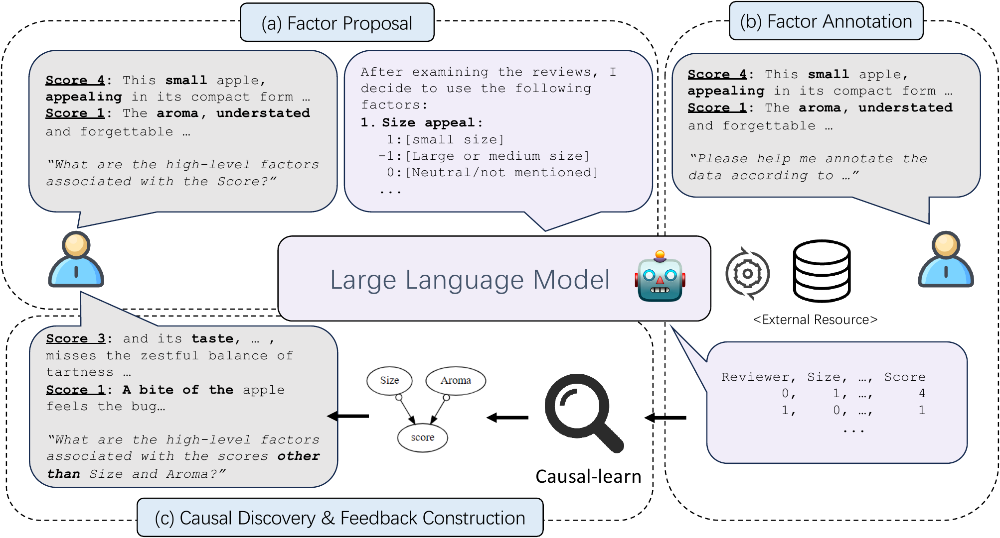

COAT-MB
哪些属性共同提供了评分的信息？
马尔可夫毯
给定这组变量后，其他候选不再提供关于目标的额外信息。适合后续预测与调查，其中也可能包含目标的结果，而不只有原因。
- 输入
- 一个数值目标 + 配对文本。
- 输出
- 因子定义与选中的变量集合。
COAT / 因果表征助手
你有评论和评分，或影像和诊断。COAT 帮你确定还应测量哪些属性，让分析不再局限于表中已有的变量。
语言模型提出并测量候选因子，统计反馈指导后续发现、因果结构分析与效应估计。
Python 包提供文本发现接口；论文还研究了图像和借助工具完成的测量。
“入口很甜，果香浓郁，
只是个头偏小。”
定义每个属性，再把同一套规则应用到每条评论。
测量示例
因子是有定义和测量规则的属性。这里把甜度分为三档：0 表示不甜，1 表示微甜，2 表示很甜。每条评论按同一套规则赋值。
预置教学示例
打开盒子就闻到浓郁的果香，入口很甜，只是个头偏小，适合放进饭盒。
评论中明确描述的甜度。
高亮片段支持按所示规则赋予这一档取值。
点选取值，查看对应的观测和规则。 试着选择 R03，再点“香气”：评论没有描述香气，因此记为缺失，而不是零。
| 样本 | 甜度 | 香气 | 大小 |
|---|---|---|---|
| R01 | |||
| R02 | |||
| R03 |

在指定观察区域内定义的视觉属性。
影像裁切自论文。框选与赋值是教学提示，不是分割、自动定位或临床标注。
点选取值，查看对应的观测和规则。
| 样本 | 局部亮度 | 形态差异 |
|---|---|---|
| M01 | ||
| M02 |
公司宣布推出新的云端技术平台，并介绍研发团队的工作。
区分常规维护与新的技术进展。
高亮片段支持按所示规则赋予这一档取值。
点选取值，查看对应的观测和规则。
| 样本 | 技术进展 | 市场拓展 |
|---|---|---|
| N01 | ||
| N02 |
工具测量的因子要说明：去哪里、读什么、怎样汇总。代码规定测量方式，不是让模型猜一个气温值。
field = archive["air_temperature"].sel(
latitude=slice(-5, 5),
longitude=slice(210, 270),
)
factor = field.mean(("latitude", "longitude"))| 1月 | 2月 | 3月 | 4月 | 5月 | 6月 |
|---|---|---|---|---|---|
| 26.8 | 27.2 | 27.9 | 28.2 | 27.7 | 27.4 |
数值为预置教学材料，不是实时再分析结果。代码是测量示意，不是 coatlearn 数据库接口；实际测量需要对应数据产品的权重与质量控制。
教学表用选中的档位说明数值编码。包中的 score 取各档概率对声明数值的加权平均；概率与置信度单独保存。
样本与取值均为预置教学材料。文字高亮与影像框是手工设置的观察提示，不是本包返回的依据。网页不运行模型。 论文探索文本、图像和工具测量。现成 Python 发现接口读取文本列；影像与气候演示说明的是更广的研究框架。
工作原理
知道一个因子怎么测量，还不能回答缺少哪些因子。COAT 将模型提出的候选与统计分析连接成反馈循环。
聊天模型阅读选中的观测，定义候选因子。
标注模型对每条观测应用同一份定义。
条件独立性检验考察：考虑其他变量后，还剩下哪些信息。
根据统计结果，让下一轮提议关注现有因子尚未解释的信息。
“测得的属性相似，评分却不同。我们还遗漏了什么？”
模型理解资料并测量。统计方法在相应假设下分析结构。

分析目标
这是不同的分析目标。能够预测结果的变量不一定是原因；观察到的关联也不等于采取行动的效应。
给定这组变量后，其他候选不再提供关于目标的额外信息。适合后续预测与调查，其中也可能包含目标的结果，而不只有原因。
表示具有相同条件独立性关系的一组候选结构。补充因子可以细化边端点，圆圈保留尚不能确定的方向。
寻找在图与假设下可用于协变量调整的变量组合，再通过逆概率加权估计平均处理效应。
开始使用
所附 MB 任务读取 Score 和 Review，允许五轮发现，并保存因子定义与所选集合。先查看本地配置，再决定是否执行。
使用 Python 3.11 或更新版本，从 PyPI 安装。安装指南会准备只含配置和数据的小型示例目录；使用托管模型不需要克隆仓库或本地 GPU。
安装与配置准备python -m pip install coatlearn
python -m coatlearn --help安装不启动模型。先按安装指南把 config/ 与 data/ 下载到 coat-example；执行前不加 --run 查看 MB 任务。
在准备好的 coat-example 目录执行。命令用 DeepSeek Flash 提出因子，用托管 Jev 标注并检查定义。先准备 DEEPSEEK_API_KEY 与 TYPESAFE_API_KEY。文本会发送给这些服务，也可能产生费用；本地 Kev 是另一种选择。
准备模型凭据python -m coatlearn mb --config config/mb.toml --decision-model jev \
--run --output-dir runs/apple-mbimport json
from pathlib import Path
result = json.loads(
Path("runs/apple-mb/result.json").read_text()
)
print(result["diagnostics"]["final_blanket"])列表也包含目标 Score。因子定义、设置与研究假设随结果一起保存。
跟随完整教程MB 与 PAG 共用 1000 条合成苹果评论。ADJ 使用 2000 条合成顾客帖子，采用邮件与访问存在混杂的研究设置，不是原始随机化 Hillstrom 实验。
已在 PyPI 发布，包名为 coatlearn。软件采用 Apache-2.0；两份示例 CSV 采用 CC BY 4.0，使用时保留署名。 源码仓库
研究案例
论文探索新增测量因子如何让研究问题更具体。这些案例需要各自的领域设置，不是本包的一键演示。
气候 / ENSO
借助工具的模型在 NOAA 再分析数据中定义区域测量。研究得到 13 个因子，找回与文献一致的联系，并提出土壤温度相关的待检验假说。

新闻 / 微软
研究分别测量创新、产品、法律与战略信息，用前 200 个交易日发现因子，再在后续 400 日评估基于因子的策略。结论限于这段历史中的单只股票。

因果结论依赖测量、数据与方法假设。执行完成不代表假设已被证实；没有估计值也不等于零效应。
已发表的研究
Journal of Machine Learning Research
27(229):1–95, 2026
期刊版在 NeurIPS 2024 框架上增加 COAT-PAG、COAT-ADJ 及其可识别性分析。
@article{JMLR:v27:25-2137,
author = {Chenxi Liu and Yongqiang Chen and Tongliang Liu and Mingming Gong and James Cheng and Bo Han and Kun Zhang},
title = {Discovering and Reasoning of Causality in the Hidden World with Large Language Models},
journal = {Journal of Machine Learning Research},
year = {2026},
volume = {27},
number = {229},
pages = {1--95},
url = {http://jmlr.org/papers/v27/25-2137.html}
}